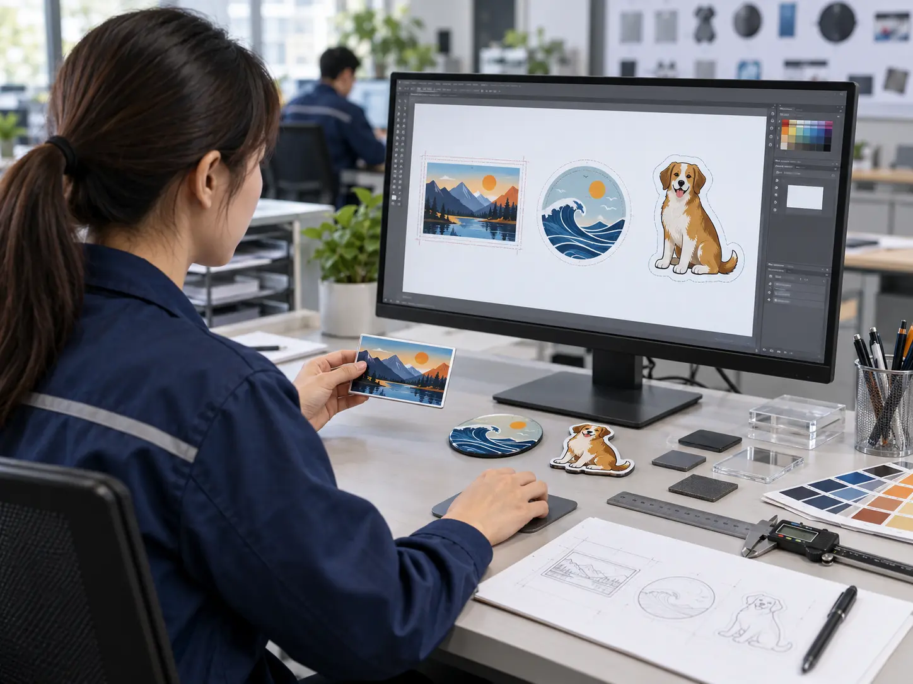
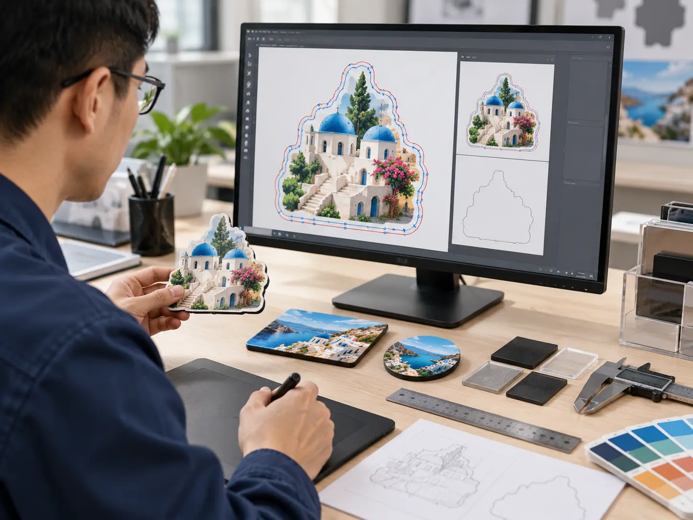
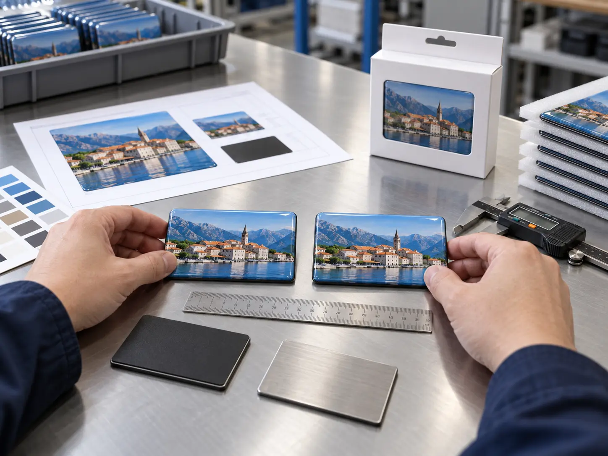

Artwork Files
Supplied design files are the starting point where the design is already developed for print.
Artwork submission, technical review and physical sampling are handled as one controlled stage, so what is approved on file is what is produced in bulk.
You do not need a print-ready file to open a review. We work from the material you have available and tell you what else is needed as the project develops.
Supplied design files are the starting point where the design is already developed for print.
A photo, screenshot or sample of the intended look, used when no production file exists yet.
A written description of the product, the market it ships to and how the item will be used and displayed.
An item you already sell or have produced, submitted as a construction reference.
Accepted file formats, resolution requirements and any artwork preparation work are confirmed per project against the submitted material. We do not publish a fixed format list, because the right requirement depends on the construction and print route involved.


The technical review is where most production problems are prevented. Each point below is reviewed against the construction you selected, not in isolation.
The design is checked against the intended finished dimensions and outline before tooling is planned.
Usable print area is defined so important design elements are not lost to edges, doming or trimming.
Where the piece is cut is reviewed against the artwork so the finished outline matches the approved design.
Backing cards, bagging and inserts are reviewed with the artwork, because they change the visible retail face.
How the artwork sits on the selected material and finish — flat, domed, rigid or moulded — is confirmed at this stage.
Where several designs are combined in one order, the range is reviewed together so the pieces read as one collection.
Die-lines and cut paths are prepared and confirmed in-house. Different constructions are reviewed separately, because a shape that works as a flat printed piece may need a different approach once it is domed or moulded.
The same artwork can read differently on a flat printed sheet, under a dome, on a rigid face or on a moulded surface. We review those differences as part of the construction decision rather than after production.
The intended colour direction is reviewed against the selected material and surface before sampling.
How doming, lamination, rigidity or moulding changes the reading of the finished piece is discussed with you.
Where a colour or finish decision is critical, it is resolved on the physical sample rather than on screen.
Colour acceptance is agreed on the approved physical sample for the specific construction. We do not publish a fixed colour-tolerance standard that is applied to every material, because the achievable result depends on the construction, surface and print route confirmed for your project.
A physical sample is produced from the confirmed artwork, dieline and construction, and submitted for your approval.
Physical sampling: 7–10 calendar days. Sample scope, applicable sampling charges, revision rounds and file requirements are confirmed per project with your quotation.

Standard MOQ starts from 200 pcs/sets in total per product construction and manufacturing process. Multiple designs may be combined, subject to project review.
We will review size, shape, print area, cut path and packaging requirements, then confirm sampling with your quotation.
Get Quote